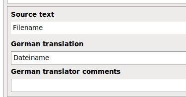
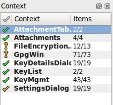

Quick guide to translation
- Download and install Qt Linguist
- for windows
- or with "apt-get install qt4-linguist-tools" on linux
- Open gpg4usb translation file from the gpg4usb folder in your preferred language, e.g. ts/gpg4usb_en.ts
- Choose "SettingsDialog" from the left Panel and insert your languages name as translation for the "English" String. (example)
- Do a "File->SaveAs" and save a new file e.g. ts/gpg4usb_??.ts (where ?? should be your locale, as defined by ISO 639-1)
- try translating another string, e.g. "&Open" from GpgWin.cpp
- hit File->Release
- start gpg4usb and look into "Edit->Settingsdialog", your language should now be selectable.
Now go wild translating and send us the ts-file. We will include it in our next release.
We will contact you to update translations when new ones are needed. You will also experience how nice linguist
behaves to only ask you for the changed strings to be translated. We are looking forward to working together
on delivering gpg4usb in your language.
Especially useful for your translation work are the buttons  from the toolbar. With the left you jump to the next untranslated phrase, the right one marks a phrase as translated.
from the toolbar. With the left you jump to the next untranslated phrase, the right one marks a phrase as translated.
Some further reading on how to use linguist as translator is available at http://doc.qt.nokia.com/latest/linguist-translators.html.
To integrate a new language into gpg4usb, one of the developers has to do one simple step and then the translater can begin his work.
For the translator, the most simple way is to use the Qt-Linguist. The developer has to install lupdate and lrelease. In Linux these are contained in the qt4-dev package. Some detailed documentation on the linguist is available here.
STEP 1: Change the project-file
At first a developer has to add a line for the language in the gpg4usb.pro file in the TRANSLATIONS section looking like
release/ts/gpg4usb_<language>.ts \
where <language> has to be replaced by the characters, which can be taken from this list.
STEP 2: Run lupdate
Then the developer has to run lupdate, so that the appropriate ts-file is created in the release/ts directory:
lupdate gpg4usb.pro
The ts file is a xml-file, which contains the original phrases, the translated phrases (when it's done), the status of translation, comments to the translation and some other information.
STEP 3: Translate the file
Now the ts-file can be opened with the linguist. In the programm, you just have to enter the translation of the phrases into the translation field and hit [Ctrl]+[Enter] to set the translation status of the phrase to ok and jump to the next unfinished translation. The status of the translation and comments also are automatically saved in the ts-file, so that the translation are easier to maintain.

Three things have to be taken care of.
- Sometimes, there is a & in the phrase. This means, that the character after the & is an accelarator (so it can be used to browse the menu with the Alt-keys). These accelarators have to be unique for every submenu, otherwise the won't work.
- The second thing is, that in some expression there is contained something like %1. This mostly is a placeholder for a file-name, which is replaced by gpg4usb while it is running.
- The third thing is, that in some phrases, there are html similar tags like <p>. These have to be left untouched.
STEP 4: Release the translation file
After translating all the phrases, you have to choose File , Release in the linguist's menu. With this an appropriate qm-file (quite like a binary language file) is generated.
STEP 5: Run the programm
Now you can run gpg4usb with the new language by choosing the language in the settings menu.
Howto Translate new phrases
When the project envolves, it's possible, that new expressions have to be translated. In this case the developer has to run lupdate once more. The translater just has to open the new ts-file with the linguist. On the upper left, he sees in the context menu, in which section are new phrases to translate (everything, which hasn't a green haken in front).

Again the translator has to hit [Ctrl]+[Enter] so that the linguist jumps to the unfinished translation. Afterwards the translator has to release the file another time.
{kind=link}